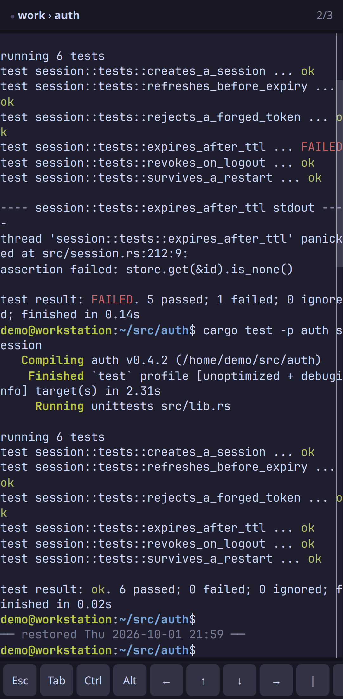
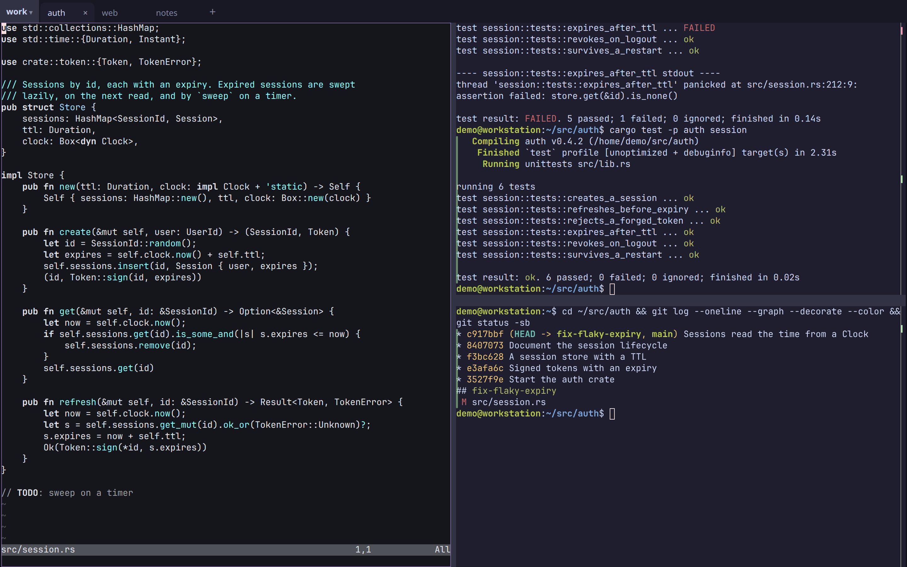
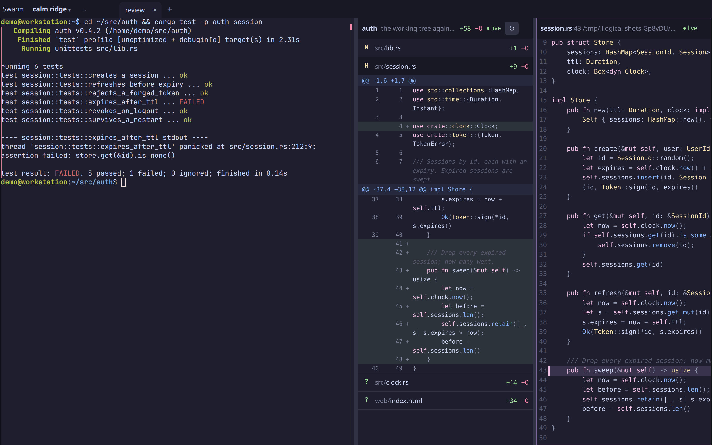
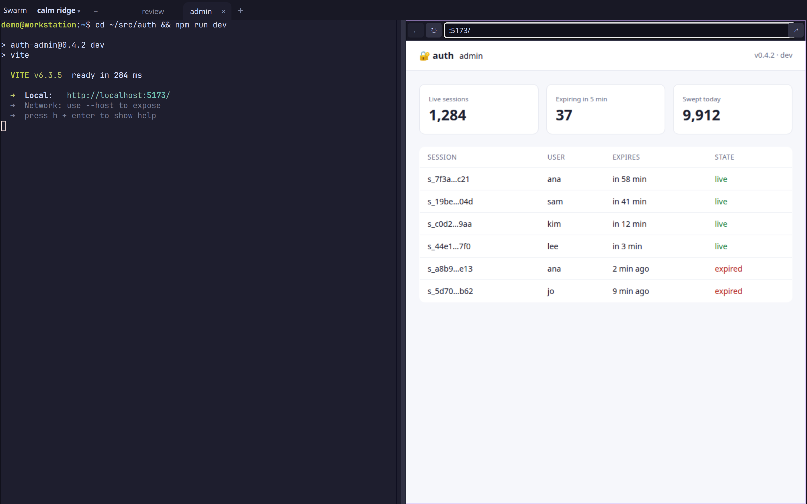
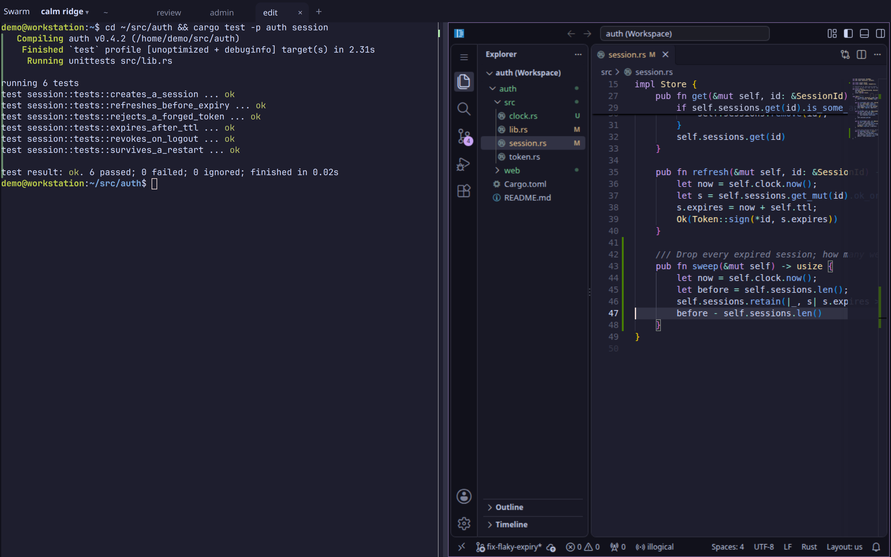
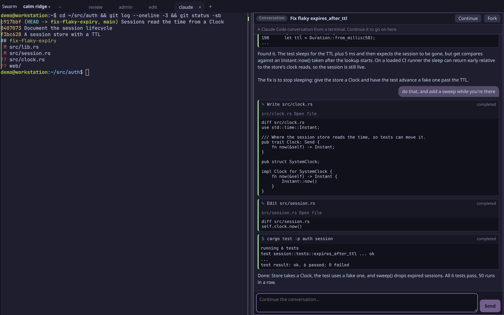

The swarm shows every session on every machine you can see, grouped by project, machine or person. Busy sessions drift to the middle. Anything waiting on a person lifts out to the Needs You rail, and whoever answers first is shown on the card.
Fig. 01 // swarm · 374 panes · 6 machines
02 · Sessions
Leave sessions open.
Start a task with Claude Code or Codex and come back to it later. The session stays open, with its output available when you return.
Fig. 02 // agent at work
03 · Needs you
See who needs input.
Questions and approval requests appear in one view. See which agents are waiting and answer from your laptop or phone.
Fig. 03a
Fig. 03b

04 · Persistence
Close the browser. Keep sessions running.
Your sessions run on the host machine, independently of your browser. Reopen the workspace to see your terminals and their output.
Fig. 04 // workspace restored
05 · Together
Work in the same session.
See what your teammates are working on and join a shared session to pair, answer an agent or help with a stuck task. You control who can view or interact with your sessions.
Fig. 05 // shared workspace

06 · Blocks
Not just terminals.
A terminal is one kind of block. The things you'd switch windows for open beside the pane they're about, in the same tabs and splits, on the same machine, a VM tab's too. They come back after a restart and show on every screen you open, your phone included.
Block // changes

What changed
Changes opens a diff block for the pane's repository: each file with its +/−, its hunks a tap away. Tap a line for the file, marked there. Both follow the edits as they land, and nothing in them can write, so checking an agent's work from your phone is safe.
Block // port

Your dev server, beside it
npm run dev in a pane, then open its port: the app sits next to the terminal, hot reload and all, even from a VM or your phone. Each block is its own origin, so the page can't reach illogical. When the server dies the block says so, and the page comes back with it.
Block // editor

VS Code where the pane runs
Open in editor starts VS Code on the pane's machine, at the file and line, with your settings and extensions kept. No ports, no SSH config, and it sleeps when nobody has it open.
Block // conversation

Claude Code conversations
Any Claude Code session on the machine, from a terminal or the desktop app, opens as a block: prompts, replies, every tool call and its output. Follow one from your phone as it runs, then Continue it right there, with your settings and skills, or Fork it if it's still open somewhere else.
And more: web pages (illogical open example.com), panes from your other machines in this layout, drawn straight from their host, and your own VS Code, Cursor or nvim as tiles in the swarm, with the debugger's stops as cards. Every kind shares the layout, the illogical CLI and the rail of what needs you.
07 · Your hardware
Run it on your own machines.
Connect through Tailscale or an encrypted relay. Layout and scrollback survive reboots; running processes don’t.